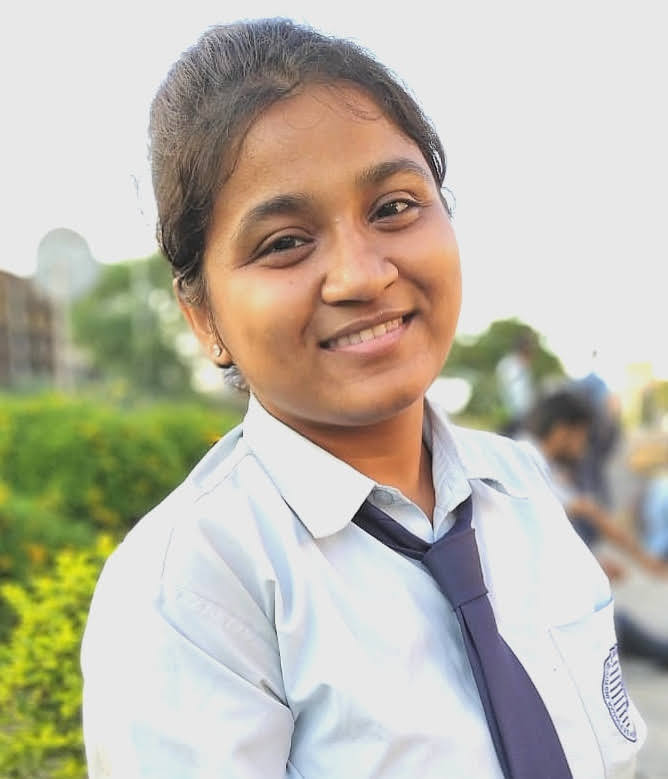

About MeI'm a photographer based in Kolkata, India. But much more than that, I consider myself a traveler, an earth child, a cat cuddler, a happy and social introvert, a tea drinker, a big hearted and open minded. I believe in authenticity, imperfection , love and courage. Photography has always been one of my favorite hobbies. Thing about the camera and the lens is that it lets you see people, places, etc. in a whole new perspective and it helps to see things from a different view.